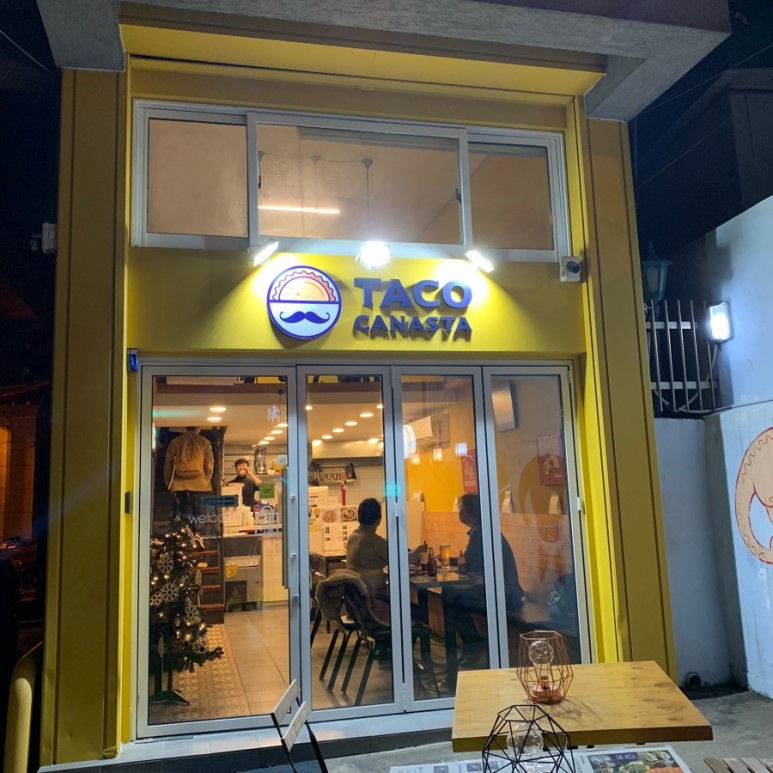
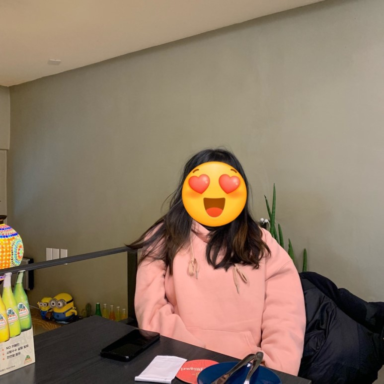
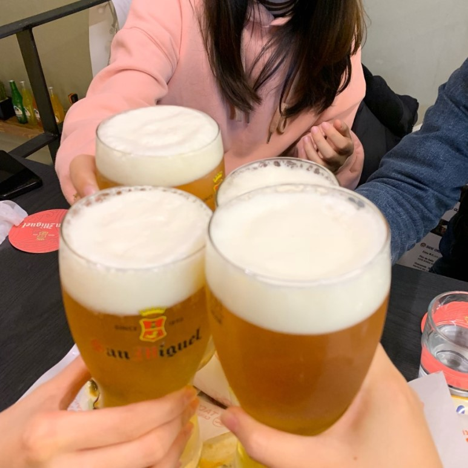
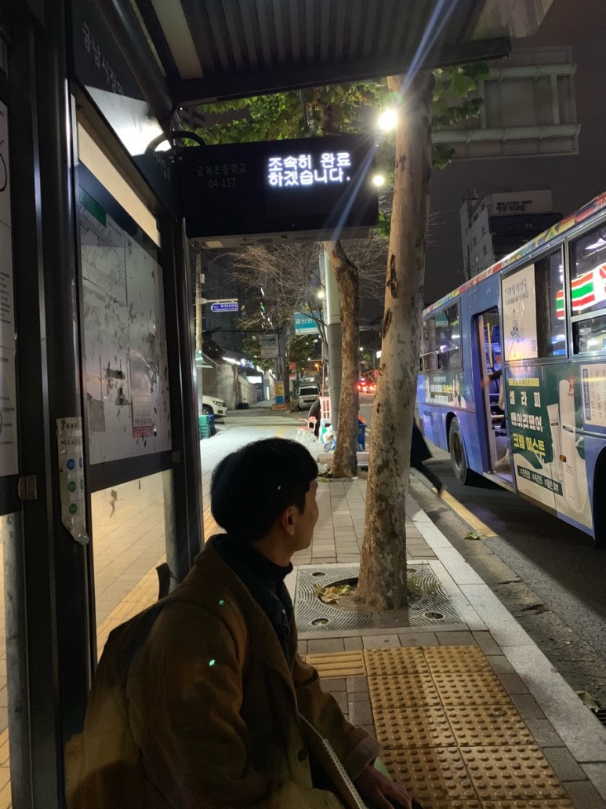

싱글몽글의 나들이
이제 성동구 금호동의 주민이 된지
13년이 넘어간다...
거의 내 인생의 절반을 산 셈이다ㄷㄷ
사실 아직도 길을 잘 몰라서
지나가다가 누가 길 물어보면
여기 산지 얼마안되서 모르겠다고 할 때는
종종 있다.....ㅎㅎ어쨌든
이 긴 시간을 여기서 보내다보니
웬만한 이 동네 식당들은 파악한 것 같다
사실 금호동에 맛집이 없는건 아닌데
많지 않은건 사실이다....ㅎㅎ
그래서 이제 좀 동네의 진주를 찾아보자?는
마음으로 조금씩 금호동 맛집을 소개하려고 한다
근데 진짜 맛집만 소개할 것이다
맛없는 것을 맛있다고 하는 그런 블로거는
되지 않겠다!!!!
그리고 최근 발견한 금호동 맛집
타코 까나스따(TACO CANASTA)

금호동 인싸 져니가 적극 추천해준 식당!음식가격은 3000원부터 10000원까지
꽤 저렴한 가격!!
우린 타코+브리또+퀘사디아+프라이앤크림을 시킴
음식 이렇게 시켜도 21000원!
여기는 맥주가 그렇게 맛있다고
져니랑 쏘영이가
적⭐️극⭐️추⭐️천을 해서
맥주도 시켰다ㅎㅅㅎ
금호동으로 이사올지 모르는
구독자 호나호니님
모자이크 원치 않으셨는데
다른 분들이 원하시는 것 같아서요...ㅠㅠ
전체 모자이크 넣어드렸습니다...^^

그리고 유미의 세포들 감성세포
인간버전 져니ㅋㅋㅋㅋ

저의 블로그를 도와줘서 감사해요
맥주 진짜 맛있었다ㅠㅠㅠㅠㅠ
거품이 엄청 부드러웠음ㅠㅠ
도쿄 시모키타자와의
유명한 오코노미야끼 집에서
마셨던 생맥주 맛과 비슷했음
제발 드세요메뉴판에 있던 사진과는
거리가 멀어보이는 감튀도 등장
근데 맛있었음ㅋ.ㅋ 그럼됐지 뭐
개인적으로 퀘사디아가 제일 맛있었다
마감시간까지 떠들면서 놀았다

2016 기다리는 호나호니님...
언젠가 꼭 금호동으로 이사오시길...그럼 또 다음 금호동 맛집으로
돌아오겠슴다!!!!!